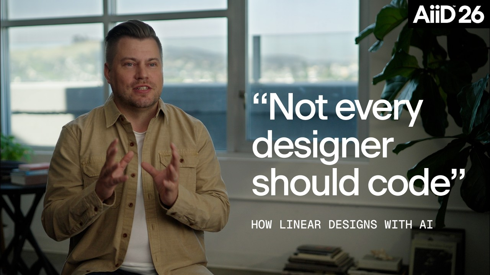

中文全文译文：由「译文工坊」根据英文原文自动翻译生成，供学习参考。结构与措辞以译文为准；想看原始论述，请点上方「阅读原文」。
“当你什么都能做时，选择不做什么，远比把所有事情做得更快重要得多。”
在 AI in Design 的第一篇案例研究中，我们探讨了 Sierra 如何利用 AI 打造更好的客户体验。今天，我们将走进科技行业最注重匠心的团队之一，看看他们的设计流程在 AI 时代如何演变。
“设计是一场探索，而不是生产流水线”：Linear 如何守护优秀软件背后的思考
Linear 是一套产品开发系统，已有超过 40,000 个团队在使用，包括 OpenAI、Coinbase 和 Ramp。公司以对细节的极致追求闻名，已成为软件匠心的基准测试。如果你问一屋子的产品设计师，哪家公司的软件设计得最好，Linear 几乎一定会被提到。
Charlie Aufmann 去年底加入 Linear，担任产品设计师。他说自己加入时感到压力很大：“这是世界上最好的设计团队之一，匠心水准极高……我能达到这个标准吗？”
当任何人都能在几秒内把想法变成可运行的软件时，要守住这个标准就更难了。人们很容易想跳过设计优秀产品所必需的那些繁杂的思考、迭代和判断。但即便 Linear 自己的产品正朝着日益智能体化的未来演进，团队在使用 AI 时依然非常审慎：不是不惜一切代价追求速度，而是有意为人的判断创造更多空间。
我们与 Linear 的 CEO Karri Saarinen，以及产品设计师 Charlie Aufmann 和 Isha Kumar 聊了聊，想了解他们的设计理念和工作方式如何延伸到 AI 世界。
你将了解：
- Karri 如何打造一个基于 Linear 思维方式训练的 AI 技能
- 设计师如何使用智能体获取客户与产品上下文
- 为什么有位设计师只在四分之一的新设计工作中使用 AI

为什么不该跳过问题阶段
过去几年里，讨论的焦点从“设计师该不该写代码？”变成了“既然 AI 让写代码如此容易，设计师现在该写多少代码？”正如我们自己的研究所显示的，如今有一半的设计师表示自己会把代码发布到生产环境。
Karri 担心，当这种方式成为默认的工作方式时，会丢掉一些东西。问题不在于设计师写代码本身不好，而在于代码这种媒介往往会迫使人过早做出承诺。用一条提示词就把一个不成熟的想法变成可运行的原型，你可能还没来得及弄清自己究竟要解决什么问题，就已经被技术约束困住了。
他把设计视为一种探索：你从一个混乱的问题出发，并不知道最终答案。错误在于完全跳过这个探索过程，或者一开始就没有把问题想清楚。
他认为，这是设计项目失败最常见的原因之一：
“大家无法就解决方案达成一致，因为每个人心里想的是不同的问题。最后的方案成了许多不同问题之间的折中，而不是对某一个问题的清晰解答。”
对 Linear 来说，这正是为什么必须保留深入思考和探索问题的过程，这是做出优秀产品的关键。

用 AI 拷问问题本身
Karri 打造了 /linear-way，这是一个自定义的 AI 技能，基于 Linear 的博客文章和其他内部资料训练而成。它连接着一个包含 4 万多条客户请求的库，内容来自客户通话、Intercom 邮件、Slack 消息和推文，充当 Karri 的讨论搭档。
客户通常会直接提出具体的解决方案（“我想要这个功能”），而不是描述背后的痛点。所以 Karri 用这个技能来拷问每条请求：
- 这个请求背后的需求是什么？
- 我们做了哪些假设？
- 如果我们不做这个功能会怎样？
这个技能在设计上就明确要求不能照单全收地接受请求：
“要像 Linear 的产品队友，而不是只会接需求的助手。对每一条输入，先找出背后真正的问题，而不是直接接受对方提出的解决方案。”
例如，当 Linear 在考虑是否要做 wiki 功能时，这个技能帮助团队发现：客户其实并不是想要在 Linear 里建一个完整的知识库，而是想用更简单的方式，在工作所在的地方保存和访问团队文档。
智能体重新定义了这个问题：“这个诉求与其说是请改进文档，不如说是请让上下文与执行处于同一处。”
Karri 进一步追问：Linear 为什么不该做这个功能？智能体给出的理由是：这个想法可能会稀释 Linear 的核心优势，让产品范围变得臃肿，并把公司拖进竞争拥挤的知识库品类。AI 没有一味附和，而是帮助 Karri 对这个想法做了压力测试。观看完整的 /linear-way 演示。

收集上下文，做出更好的决策
产品设计师 Isha Kumar 也以类似的方式使用 AI，而且远早于动手写代码之前。
在修复一个关于 issue 如何关联到活跃开发者会话的 bug 时，她先让一个智能体查询代码库和历史决策记录，弄清楚这种旧行为为何存在。“我只是需要它汇总上下文，好让我做出有依据的决定。”
今年早些时候，在 Linear 的界面焕新过程中，Charlie 把这种做法放大到了更宏观的层面。当客户对新的 issue 页面布局提出反对时，他用一个智能体汇总了 Twitter、Slack 和客户电话中的客户原话，以“真切感受到这里究竟有什么问题需要解决”。
随后在设计评审中，他把这份汇总与前后对比截图一起带到会上，这样团队就能依据客户的原始反馈做决定，而不是依赖他个人的看法。
在这两个例子中，AI 都帮助呈现了做出更好决策所需的信息。

守护创作过程
AI 极大地拓展了设计师能够构建的范围。但对 Isha 来说，它带来了另一个问题：设计中哪些部分值得守护？
最初她重度依赖 AI 时，发现自己的设计过程在退化。聊天界面迫使她把视觉化的、下意识的直觉翻译成文字提示词，打断了她的心流。管理这个工具逐渐变得像在管理“一支初级员工团队”，而不是在做设计。
于是她选择只在能减少阻力的地方使用 AI，而不是贯穿整个工作流。如今，这意味着修复 UI 上的小瑕疵，以及为那些过去探索起来繁琐的边缘情况快速搭建动态原型。这与 Linear 的 Quality Wednesdays 十分契合：这是每周一次的例行活动，团队齐聚一堂，修复那些日积月累会损害整体产品体验的小缺陷。
她不会用 AI 来点评自己的设计，也不会用它写界面文案。“它想的是认同我，而不是启发我，”她说。“AI 生成的语言确实让我觉得是在将就。”她全新的设计工作中，只有约 20% 到 30% 会经过 AI，其余仍然亲手完成。
“把某样东西当工具用，和把它当拐杖用，差别很大。AI 会诱使你无限使用，这可能让你越来越不相信自己。如果你只会求助于 AI，就说明你自己的手艺里存在盲区。”
- Isha Kumar，产品设计师
以下是 Linear 团队总结的几条实用原则，帮助你在使用 AI 时不把思考外包出去：
- 收集上下文，而不是征求意见。“我提问时并不真的需要它的意见，”Isha 说。“我只是需要它汇总上下文，好让我自己做决定。”
- 让 AI 反驳你。智能体总想讨好你，所以 Karri 会让它跟自己唱反调：“我会让它针对我的想法提出反对的论点，然后由我来评估：这些论点站得住脚吗？我该认真对待吗？”
- 在动手之前先定义什么是好。AI 几乎能让任何产出都显得像是有进展，这就让人很容易为得到的结果找理由。“否则你永远都是成功的。它永远不会失败，因为你从未设定任何标准，”Karri 说。
- 边做边学。Charlie 会一开始就告诉智能体要教他：“我不是技术型设计师。当你为我构建东西时……请用设计师的语言和我交流，教我这些概念。我不想只是用你来做出某个东西，我想在做的过程中学到东西。”
AI 时代设计的角色
优秀的设计师不只是把界面做得更好。他们帮助公司更清楚地看清问题，做出更好的决策，并让团队其他人对该做什么充满信心。
正如 Karri 所说：
“最优秀的设计师能在不清晰的问题中理出清晰的思路。这是我最喜欢的那类设计师。他们带给团队清晰感和信心，让大家相信就该这样去做。这样每个人都能安心，因为有人为他们指明了方向。”
这种清晰感依赖判断力：知道什么重要、什么不重要，以及该把精力放在哪里。而且这一点在设计职能之外也越来越适用。
当创业公司似乎都在互相照搬打法时，Linear 的优势来自对自身判断的信任。它对待 AI 的方式也是如此：知道何时该采用新工具，也知道何时该说：“我们想过了，我们不做这个。”
开放的设计岗位
- Linear 正在北美和欧洲招聘 Production Designer 和产品设计师。查看开放岗位。
- Ambrook 为独立经营的企业打造财务软件，正在旧金山、纽约、丹佛及远程招聘产品设计师、Design Engineer 和设计系统工程师。查看开放岗位。
- Paper 正在招聘远程产品设计师和 Design Engineer，共同打造其协作设计工具。了解更多并申请。
- Gusto 正在旧金山和纽约招聘设计负责人（Head of Design）和多名产品设计师，覆盖其整个平台。查看开放岗位。
- Stripe 正在旧金山、纽约、多伦多、伦敦、都柏林等地招聘产品、动效、品牌和网页方向的设计师。查看开放岗位。
- Notion 正在旧金山和纽约招聘产品设计师、用户研究员和品牌活动经理。查看开放岗位。
- Commure 正在山景城招聘品牌设计负责人（Brand Design Lead），负责塑造涵盖活动、发布和产品的品牌。在此申请。
在我们的招聘板上，浏览 Designer Fund 旗下公司的 1,000 多个开放岗位，或者把这篇文章转给正在求职的人。
如果你想与那些以设计为成功核心的创始人和公司共事，欢迎加入我们的人才网络，让我们在未来有机会时第一时间想到你。